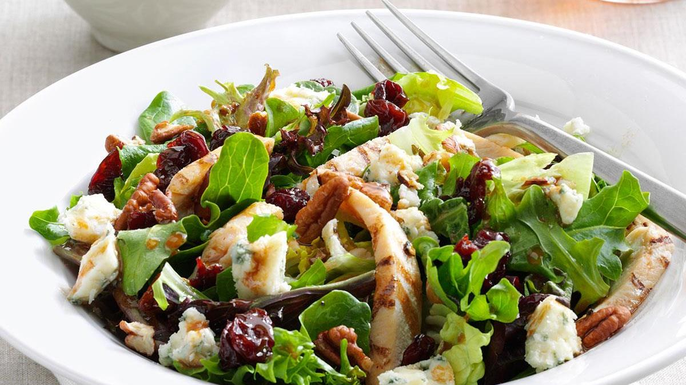

A Michigan Salad is a type of green salad popular at restaurants in the Detroit area and other parts of Michigan. It is typically topped with dried cherries, blue cheese, and a vinaigrette dressing.[1] Some recipes use dried cranberries instead of cherries, add other kinds of fruit such as apple or mandarin orange, omit or substitute the blue cheese, and/or add walnuts or pecans.
In Western Michigan, a Michigan salad might include grapes, sliced apples, and walnuts or pecans. It often will have a mayonnaise and mustard based dressing, rather than a vinaigrette.
Back to Home